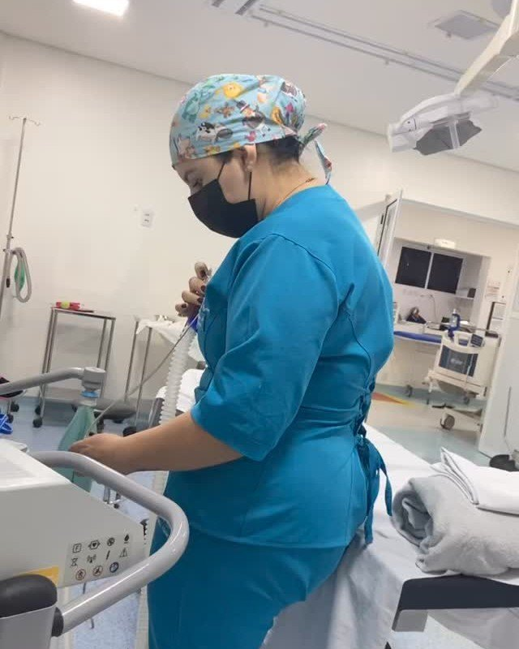
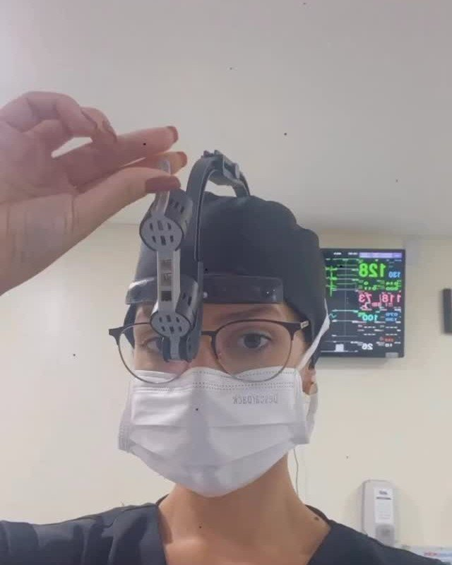
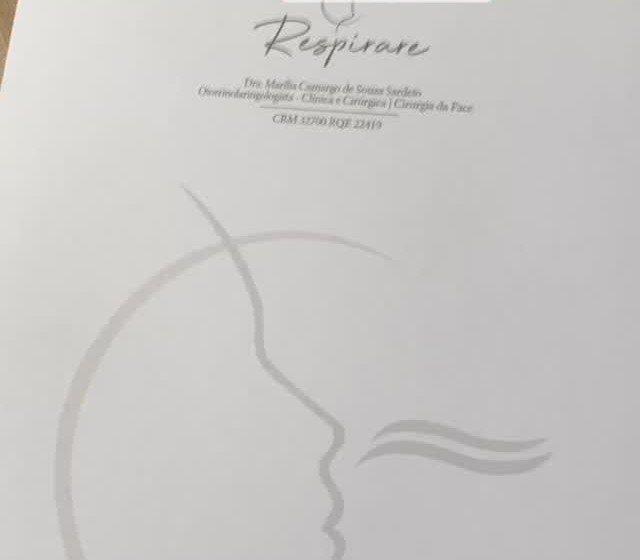
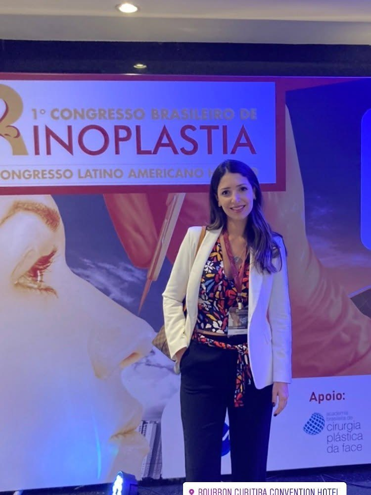

Função e harmonia
Rinoplastia: respirar bem e um nariz que combina com você.
A rinoplastia é a cirurgia que corrige a forma e, muitas vezes, também a função do nariz: narinas, ponta, largura, dorso (a giba) e a respiração, no mesmo procedimento. Nenhum nariz é igual ao outro, e cada pessoa tem um desejo e um formato de rosto diferentes. Por isso o nariz é planejado dentro do contexto de toda a harmonia com a face, e não a partir de um padrão.
Texto revisado pela Dra. Marília Camargo Sardeto, Médica, CRM-PR 32.700 · RQE 22419, em
- Curativo
- Retirado no retorno
- Óculos
- Só depois de 30 dias
- Resultado
- Amadurece ao longo de meses
- Valor
- Orçado depois da consulta
Duração, anestesia, internação e volta à rotina: a Dra. confirma na revisão do texto · os pontos marcam dados a confirmar
Para que serve
- Diminuir o tamanho das narinas ou a largura do nariz.
- Levantar ou definir a ponta; corrigir o nariz “de batata”.
- Diminuir o dorso, a giba.
- Melhorar a respiração: desvio de septo e outras alterações podem ser corrigidos na mesma cirurgia (rinosseptoplastia).
- Rinoplastia secundária: refazer ou corrigir uma cirurgia anterior, em geral com enxerto de cartilagem.
Para quem não é indicado
- Antes do fim do crescimento facial: nas meninas, a partir dos 15 a 16 anos (ou 3 anos após a primeira menstruação); nos meninos, a partir dos 16 a 17 anos, avaliando a idade óssea.
- Quem traz uma referência que não combina com o próprio rosto ou que traria risco à saúde: nesses casos, a Dra. orienta de forma diferente ou contraindica.
- Quem busca um “nariz perfeito” como fim em si: por aqui, a prioridade é bem-estar e harmonia facial.
- Condições clínicas avaliadas na consulta, caso a caso.
Rinoplastia é cirurgia, e só médico faz. Desconfie de “rinoplastia definitiva” ou de qualquer procedimento no nariz oferecido por quem não é médico: a Dra. já atendeu quem precisou corrigir o dano estético e emocional de uma “experiência” dessas.
Como é feita

Centro cirúrgico

- 01
Uma primeira consulta mais longa: o que você gosta e o que não gosta no seu nariz e no seu rosto, fotos padronizadas e simulação no programa. Referências de pessoas parecidas com você ajudam mais do que fotos de pós-operatório imediato.
- 02
Avaliação clínica e exames pré-operatórios.
- 03
Cirurgia em hospital. A ponta é estruturada com enxerto da sua própria cartilagem: na maioria dos casos, a do septo.
- 04
Retorno para a retirada do curativo e acompanhamento nos meses seguintes.
Enxertos: septo, orelha ou costela
Enxerto você vai precisar: seja para projetar a ponta ou para corrigir uma deformidade, a cartilagem é necessária. O tipo depende de cada caso.
- ISepto
A primeira escolha. É da própria região, com menos risco de infecção, e o desvio que é retirado vira a estrutura da ponta.
- IIOrelha
Para pequenos defeitos, como o terço superior ou a asa do nariz. Não sustenta bem a ponta.
- IIICostela
Quando é preciso projetar ou estruturar muito a ponta e o septo não basta, está fraco ou já foi operado. Comum em nariz étnico e ponta muito larga. Não é para todo mundo.
Costela de banco (de doador) e implantes sintéticos não são usados: o risco de infecção é maior e, a longo prazo, o material costuma não dar certo.Dra. Marília Camargo · no Instagram
Cuidados e possíveis efeitos

As orientações vão por escrito, no papel da Respirare
Leia antes de agendar
Nos primeiros dias: dormir de barriga para cima, com a cabeça elevada; nada de deitar de bruços ou com o rosto no travesseiro. Um pouco de roxo e inchaço são esperados; protetor solar com cor, viseira ou boné ajudam a não manchar.
Tampão nasal raramente é usado; quando o nariz vai ficar mais trancado, splints de silicone por 3 a 7 dias, e você respira através deles.
Óculos só depois de 30 dias (lentes de contato ou um jeito de prender a armação com micropore, que a Dra. ensina no pós).
Fique atenta aos sinais de infecção: dor persistente e intensa, inchaço, vermelhidão, secreção, febre, calor local ou sangramento. Com qualquer um deles, procure atendimento.
Os resultados variam de pessoa para pessoa. A indicação é feita depois da avaliação médica individual.
Quem faz

Médica · CRM-PR 32.700 · Otorrinolaringologista · RQE 22419
Residência em Otorrinolaringologia e fellowship em Cirurgia Plástica Facial, com ênfase em rinoplastia, no Hospital da Cruz Vermelha Brasileira.
Na foto menor, no 1º Congresso Brasileiro de Rinoplastia, em 2022 (dos stories dela).
Perguntas que as pacientes fazem
Vou precisar de enxerto?
Sim, no mínimo do septo. A cartilagem é necessária para projetar a ponta ou corrigir deformidades. Costela ou orelha dependem do que você quer e do que precisa ser feito no seu nariz.
Vou ficar com tampão no nariz?
Hoje raramente. Quando sabemos que o nariz vai ficar mais inchado e trancado, usamos splints nasais de silicone por 3 a 7 dias, e você respira através deles. A respiração fica um pouco restrita, mas não zero, e volta ao tirar.
Com quantos anos posso fazer?
Meninas, a partir dos 15 a 16 anos, ou 3 anos após o início da menstruação. Meninos, a partir dos 16 a 17 anos, quando a formação facial está terminando, avaliando a idade óssea.
Quando posso voltar a usar óculos?
Depois de 30 dias, para garantir uma boa cicatrização e não machucar o dorso. Se você não pode usar lentes, a Dra. ensina no pós um jeito de prender a armação com micropore.
Posso usar maquiagem no pós-operatório?
Pode, mesmo com um pouco de roxo. A pele pode ficar mais oleosa. Protetor solar com cor e proteção do sol por alguns dias ajudam a não manchar.
Posso corrigir o desvio de septo na mesma cirurgia?
Sim. É a rinosseptoplastia: a cartilagem do septo que é retirada vira a estrutura da ponta, e a respiração é tratada junto com a forma.
Quanto custa?
O valor depende do que precisa ser feito e é orçado depois da consulta. O valor da consulta é informado no agendamento.
Rinoplastia · Guarapuava
Agende a sua consulta.
É na consulta que a Dra. entende o seu nariz no contexto do seu rosto e define, com você, o que faz sentido.
Conteúdo informativo. Não substitui a consulta médica. Os resultados variam de pessoa para pessoa. · os pontos marcam dados a confirmar com a Dra.